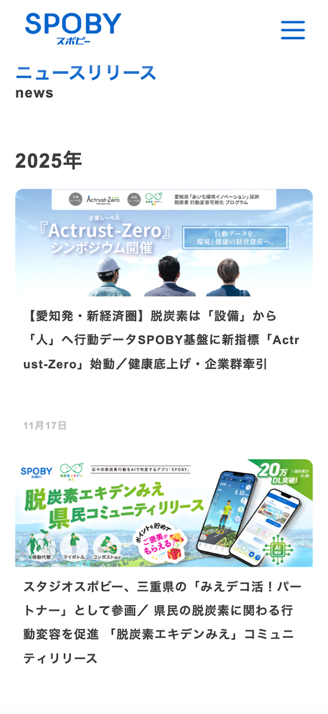
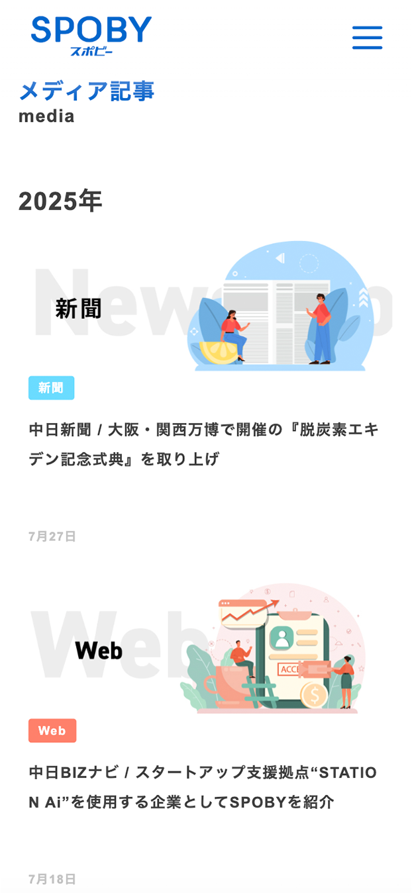

SPOBY ニュースリリース/メディア掲載ページ
制作背景・意図
- 【概要】
-
- 制作物種別 : 広報情報サイト（Webサイト）
- 対象ページ : ニュースリリース/メディアページ
- サイト内容 : 自社の取り組みやメディア取材情報
- アプリ（SPOBY）について :
「SPOBY」は人の活動による脱炭素・健康増進を実現するアプリです。ユーザーはアプリを利用して活動を行うことでポイントを獲得でき、貯まったポイントはアプリ内に掲載されている様々なリワードと頑張ったご褒美として交換・獲得することができます。
- 【制作目的】
-
- ニュースリリースおよびメディア掲載ページは、SPOBYの取り組みや活動実績を時系列で整理し、外部に向けて正確に伝えることを目的として制作しました。自社から発信する情報（ニュースリリース）と、外部メディアに取り上げられた情報（メディア掲載）を分けて掲載することで、情報の性質や信頼性が直感的に理解できる構成としています。
- 【制作時に重視したポイント】
-
- 情報量が増えても閲覧しづらくならないよう、ニュースリリースとメディア掲載をページ単位で分け、それぞれの役割が明確に伝わる構成としました。各記事は日付順に整理し、最新情報から自然に目に入る設計とすることで、現在進行形の取り組みが把握しやすい導線を意識しています。また、記事種別（新聞・雑誌・テレビなど）が一目で判別できるようラベルを設け、閲覧者が情報の種類を即座に理解できるよう配慮しました。
- 【デザイン上の工夫点】
-
- 一覧画面では、記事ごとにカード型のレイアウトを採用し、サムネイル・媒体種別・タイトル・日付といった必要な情報を整理して配置することで、視線の流れが途切れない構成としています。ニュースリリースページでは実際の告知ビジュアルを使用し、発信内容の雰囲気が伝わるデザインとしました。一方、メディア掲載ページでは新聞・雑誌・テレビといった媒体をイラストで表現することで、実画像がない場合でも内容の違いが直感的に分かるよう工夫しています。